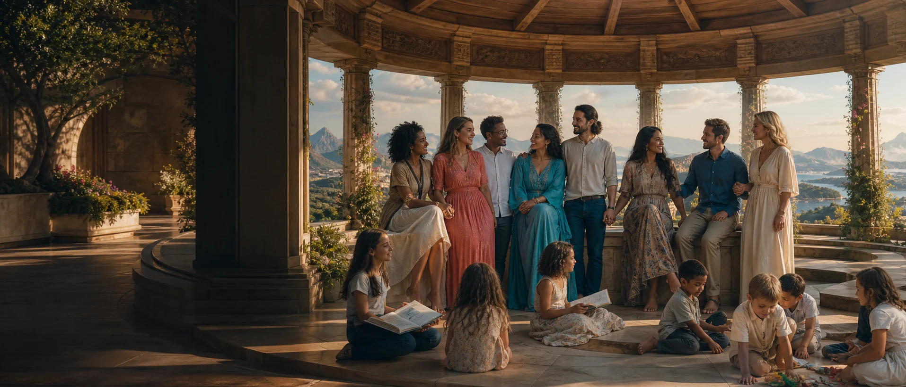
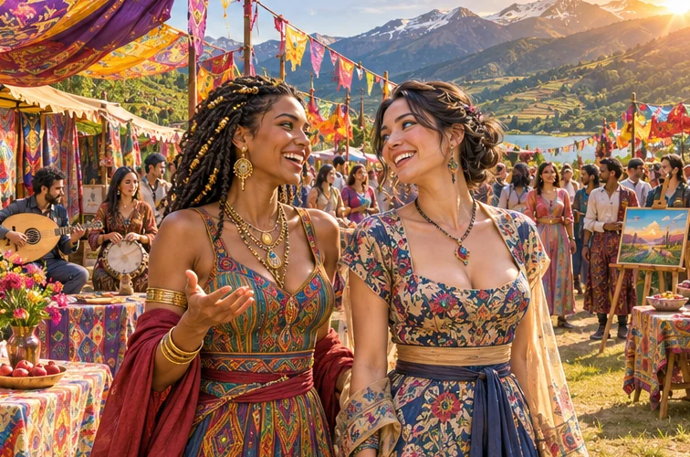

My romantic relationships
I want to choose the women who also choose me. Each person has the same freedom to choose their own partners.

The family business and love marriage across cultures that Luke Nathan Hayes wants to build.
Concept artwork
I'd like to build a family with people from different cultures who choose to share love, care and enterprise. We'd work out what we want to make together and what each person wants to pursue in their own life.
This is my proposal within the wider Global Group Marriages framework. Other people can form their own groups, starting with a throuple and growing to whatever size works for them. This kind of marriage will suit some people and add one more possibility to the many ways families already live.
I want to be free to say who and what brings me joy and helps me live responsibly and abundantly. Everyone involved gets to define that for themselves.
I want to choose the women who also choose me. Each person has the same freedom to choose their own partners.
I encourage women in the group to vet and invite men they'd like to join. I'd have the same say as any other partner. The people taking on each shared commitment decide together, on equal terms.
Hear from everyone affected, including children in ways that suit their age.
Make time for rest, meals, health and the people who need support.
Agree on pay, ownership, risk and what each person wants to keep independent.
Make room for each other's languages, food, stories and occasions.
Think about the care, education and relationships that children can count on over time.
Listen when something hurts, take responsibility and revisit agreements when life changes.

The name draws on the idea of coming together across borders. Our contribution would come through Joyful Responsible Abundance in daily life. We'd share food and hospitality, make music and stories, build businesses and keep turning up for people across cultures.
I'd like us to see how close we can come to unconditional love by caring about each other through change. Each person would keep the freedom to set boundaries, choose their relationships and decide which commitments they want to make.